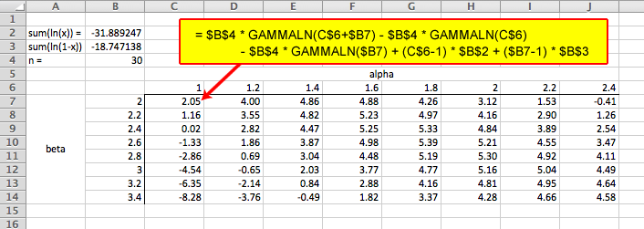
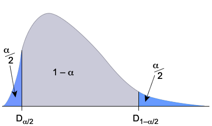

If you don't want to print now,
Models with two unknown parameters
If a family of distributions has a single unknown parameter, \(\theta\), the method of moments estimate makes the distribution's mean equal to the mean of a random sample — by solving
\[ \mu(\theta) \;\;=\;\; \overline{x} \]However many families of standard distributions involve two unknown parameters. The method of moments can be extended to models with two parameters.
Definition
If a distribution has two unknown parameters, \(\theta\) and \(\phi\), the method of moments estimates of the parameters are found by solving
\[ \mu(\theta, \phi) \;=\; \overline{x} \spaced{and} \sigma^2(\theta, \phi) \;=\; s^2 \]where \(\mu(\theta, \phi)\) and \(\sigma^2(\theta, \phi)\) are the mean and variance of the distribution and \(\overline{x}\) and \(s^2\) are the mean and variance of a random sample from it.
Our first example is almost trivially simple.
Normal distribution
If \(X\) has a normal distribution,
\[ X \;\;\sim\;\; \NormalDistn(\mu, \sigma^2) \]then the method of moments estimates of its parameters are
\[ \hat{\mu} = \overline{x} \spaced{and} \hat{\sigma}^2 = s^2 \]The next example is a little harder.
Question: Negative binomial distribution
If \(X\) has a generalised negative binomial distribution,
\[ X \;\;\sim\;\; \NegBinDistn(\kappa, \pi) \]what are the method of moments estimates of \(\kappa\) and \(\pi\) from a random sample?
(Solved in full version)
Three or more parameters
Unfortunately the method of moments does not extend easily to models with three or more parameters.
Unlike the method of moments, maximum likelihood estimation can be used for models with any number of unknown parameters. We will describe the method for a model with two unknown parameter, \(\theta\) and \(\phi\), but it should be clear how to extend it to three or more parameters.
If \(\{x_1, x_2, \dots, x_n\}\) is a random sample from a discrete distribution with probability function \(p(x\;|\; \theta, \phi)\), the likelihood function is again the probability of getting the observed data for any values of the parameters.
\[ L(\theta, \phi \; | \; x_1, x_2, \dots, x_n) \;\;=\;\; p(x_1, x_2, \dots, x_n \;| \; \theta, \phi) \;\;=\;\; \prod_{i=1}^n {p(x_i\;|\; \theta, \phi)} \]For a continuous distribution, the corresponding definition is
\[ L(\theta, \phi \; | \; x_1, x_2, \dots, x_n) \;\;=\;\; \prod_{i=1}^n {f(x_i\;|\; \theta, \phi)} \]Maximising the likelihood
Definition
If a random variable \(X\) has a distribution that involves two unknown parameters, \(\theta\) and \(\phi\), the maximum likelihood estimates of the parameters are the values that maximise the likelihood function.
This is usually at a turning point of the likelihood function — where the partial derivatives of \(L(\theta, \phi)\) with respect to \(\theta\) and \(\phi\) are zero,
\[ \frac{\partial L(\theta, \phi)}{\partial \theta} = 0 \spaced{and} \frac{\partial L(\theta, \phi)}{\partial \phi} = 0 \]Solving these equations give MLEs for \(\theta\) and \(\phi\). Equivalently, writing \(\ell(\theta, \phi) = \log L(\theta, \phi)\), we can solve the equations
\[ \frac{\partial \ell(\theta, \phi)}{\partial \theta} = 0 \spaced{and} \frac{\partial \ell(\theta, \phi)}{\partial \phi} = 0 \]This is usually easier and gives identical parameter estimates.
We now give an example.
Example: Normal distribution
We now consider a random sample, \(\{X_1, \dots, X_n\}\) from a \(\NormalDistn(\mu, \sigma^2)\) distribution. The distribution's probability density function is
\[ f(x) \;\;=\;\; \frac 1{\sqrt{2\pi}\;\sigma} e^{- \frac{\Large (x-\mu)^2}{\Large 2 \sigma^2}} \]and its logarithm is
\[ \log f(x) \;\;=\;\; -\frac 1 2 \log(\sigma^2) - \frac{(x-\mu)^2}{2 \sigma^2} - \frac 1 2 \log(2\pi) \]The log-likelihood function is therefore
\[ \ell(\mu, \sigma^2) \;\;=\;\; \sum_{i=1}^n {\log f(x_i)} \;\;=\;\; -\frac n 2 \log(\sigma^2) - \frac{\sum_{i=1}^n {(x_i-\mu)^2}}{2 \sigma^2} - \frac n 2 \log(2\pi) \]To get the maximum likelihood estimates, we therefore solve
\[ \frac{\partial \ell(\mu, \sigma^2)}{\partial \mu} \;\;=\;\; \frac{\sum{(x_i - \mu)}}{\sigma^2} \;\;=\;\; 0 \]and
\[ \frac{\partial \ell(\mu, \sigma^2)}{\partial \sigma^2} \;\;=\;\; -\frac n {2 \sigma^2} + \frac{\sum_{i=1}^n {(x_i-\mu)^2}}{2 \sigma^4} \;\;=\;\; 0 \]Solving gives
\[ \begin{align} \hat{\mu} \;&=\; \overline{x} \\[0.2em] \hat{\sigma}^2 \;&=\; \frac {\sum{(x_i-\overline{x})^2}} n \end{align} \]Note that the MLE of \(\sigma^2\) is biased. The sample variance, \(S^2\), divides by \((n-1)\) instead of \(n\) — it is unbiased and is usually prefered.
For some families of two-parameter distributions, it is difficult to find maximum likelihood estimates algebraically.
A numerical method must then be used to evaluate the maximum likelihood estimates.
A simple algorithm is a grid search; it simply evaluates the log-likelihood over a grid of values of the two parameters, letting us identify approximately where the maximum lies. The grid can then be refined to focus on a narrower range of possible parameter values.
Beta distribution
The following data set contains proportions between zero and one:
| 0.078 | 0.713 | 0.668 | 0.621 | 0.069 | 0.378 | 0.735 | 0.255 | 0.220 | 0.220 |
| 0.136 | 0.413 | 0.516 | 0.183 | 0.724 | 0.377 | 0.409 | 0.403 | 0.042 | 0.692 |
| 0.486 | 0.421 | 0.358 | 0.236 | 0.654 | 0.717 | 0.520 | 0.266 | 0.520 | 0.641 |
A reasonable distribution that could be used to model the data would be a beta distribution with probability density function
\[ f(x) \;\;=\;\; \begin{cases} \dfrac {\Gamma(\alpha +\beta) }{\Gamma(\alpha)\Gamma(\beta)} x^{\alpha - 1} (1 - x)^{\beta - 1}& \text{if }0 \lt x \le 1 \\ 0 & \text{otherwise} \end{cases} \]The log-likelihood is
\[ \begin{align} \ell(\alpha, \beta) \;=\; n \log \Gamma(\alpha + \beta) &- n \log \Gamma(\alpha) - n \log \Gamma(\beta) \\ &+ (\alpha - 1) \sum(\log(x_i) + (\beta - 1)\sum \log(1 - x_i) \end{align} \]so we will maximise
\[ \ell(\alpha, \beta) \;=\; 30 \log \Gamma(\alpha + \beta) - 30 \log \Gamma(\alpha) - 30 \log \Gamma(\beta) -31.89 (\alpha - 1) - 18.75 (\beta - 1) \]with respect to \(\alpha\) and \(\beta\). This cannot be done algebraically.
The following Excel spreadsheet shows the log-likelihood for values of \(\alpha\) between 1 and 2.4, and values of \(\beta\) between 2 and 3.4.

From these log-likelihoods, the maximum is at \(\alpha \approx 1.8\) and \(\beta \approx 2.6\).
Refining the grid to values of \(\alpha\) and \(\beta\) near 1.8 and 2.6, we can find that the MLEs are approximately
\[ \hat{\alpha} = 1.81 \spaced{and} \hat{\beta} = 2.56 \]Normal approximation
Earlier confidence intervals for parameters were based on point estimates that are approximately normally distributed.
Given an estimate of the standard error of the estimator, an approximate confidence interval can be obtained from the quantiles of the normal distribution. For example, an approximate 95% CI for a parameter \(\theta\) is
\[ \hat{\theta} - 1.96\; \se(\hat{\theta}) \;\;\lt\;\; \theta \;\;\lt\;\; \hat{\theta} + 1.96\; \se(\hat{\theta}) \]Poisson distribution example
The following table describes the number of heart attacks in a city in 10 weeks.
| Week | 1 | 2 | 3 | 4 | 5 | 6 | 7 | 8 | 9 | 10 |
|---|---|---|---|---|---|---|---|---|---|---|
| Count | 6 | 11 | 13 | 10 | 21 | 8 | 16 | 6 | 9 | 19 |
Assuming a constant rate of heart attacks per week, \(\lambda\), this can be modelled as a random sample from a \(\PoissonDistn(\lambda)\) distribution. The MLE of \(\lambda\) is
\[ \hat{\lambda} \;\;=\;\; \overline{x} \;\;=\;\; 11.9 \]Since the variance of the Poisson distribution is \(\lambda\), we can use the Central Limit Theorem to show that \(\hat \lambda\) is approximately normally distributed in large samples and has standard error
\[ \se(\hat{\lambda}) \;\;=\;\; \sqrt{\frac{\hat{\lambda}}{n}} \;\;=\;\; 1.091 \]This justifies using a normal approximation to find an approximate 95% confidence interval,
\[ \hat{\lambda} \pm 1.96\; \se(\hat{\lambda}) \;\;=\;\; 11.9 \pm 1.96 \times 1.091 \;\;=\;\; 9.76 \text{ to } 14.04 \]Maximum likelihood estimators
This can be used for all maximum likelihood estimators. In large samples, a parameter's MLE is approximately normally distributed with standard error,
\[ \se(\hat {\theta}) \;\;\approx\;\; \sqrt {- \frac 1 {\ell''(\hat {\theta})}} \]This leads to 95% confidence intervals of the form
\[ \hat{\theta} \pm 1.96 \sqrt {- \frac 1 {\ell''(\hat {\theta})}} \]The constant 1.96 can be replaced by other quantiles from the normal distribution to give other confidence levels. Confidence intervals that are found in this way are called Wald-type confidence intervals.
Assumption of normality
Wald-type confidence intervals need \(\hat{\theta}\) to be approximately normally distributed. Although this usually holds for large enough sample sizes, it is often violated when the sample size is small.
A better type of confidence interval avoids the need to assume normality. It is based on a random quantity called a pivot.
Definition
If a random sample, \(\{X_1, X_2, \dots, X_n\}\) is selected from a distribution with unknown parameter \(\theta\), a pivot is a function of the data and \(\theta\) whose distribution is fully known (and therefore does not involve unknown parameters),
\[ g(\theta, X_1, \dots, X_n) \;\;\sim\;\; \mathcal{Distn} \]Since the distribution \(\mathcal{Distn}\) has no unknown parameters, its quantiles are constants that we can evaluate. For a \((1 - \alpha)\) confidence interval, we need the quantiles giving probability \(\dfrac{\alpha}2\) in each tail of the distribution.

For example, if the pivot had a \(\NormalDistn(0, 1)\) distribution, for a 95% confidence interval, we would find the quantiles \(D_{2{\frac 1 2}\%} = -1.96\) and \(D_{97{\frac 1 2}\%} = +1.96\).
Confidence interval
From how we defined these quantiles,
\[ P\left(D_{\alpha / 2} \;\lt\; g(\theta, X_1, \dots, X_n) \;\lt\; D_{1 - \alpha / 2} \right) \;\;=\;\; 1 - \alpha \]We can therefore define a \((1 - \alpha)\) confidence interval to be the values of \(\theta\) such that
\[ D_{\alpha / 2} \;\;\lt\;\; g(\theta, x_1, \dots, x_n) \;\;\lt\;\; D_{1 - \alpha / 2} \]Since there is a probability \((1 - \alpha)\) of this holding for a random sample from the distribution, the resulting confidence interval has confidence level \((1 - \alpha)\).
We will now find a confidence interval for the rate parameter, \(\lambda\), of a homogeneous Poisson process, based on a random sample of inter-event times.
Example
The values below are times between failures of an item.
| 487 | 18 | 100 | 7 | 98 | 5 | 85 | 91 | 43 | 230 | 3 | 130 |
If failures arise at random over time with a constant rate, \(\lambda\), the values are a random sample from an \(\ExponDistn(\lambda)\) distribution, and the maximum likelihood estimator of \(\lambda\) is the inverse of the sample mean,
\[ \hat{\lambda} \;\;=\;\; \frac n {\sum{X_i}} \]The sum of \(n\) independent exponential variables has an Erlang distribution,
\[ \sum_{i=1}^n{X_i} \;\;\sim\;\; \ErlangDistn(n, \lambda) \;=\; \GammaDistn(n, \lambda) \]This distribution depends on \(\lambda\) but the following quantity is a pivot:
\[ \lambda \sum_{i=1}^n{X_i} \;\;\sim\;\; \GammaDistn(n, 1) \]Since \(n = 12\), we can use Excel to find the 2½% and 97½% points of the \(\GammaDistn(12, 1)\) distribution — 6.201 and 19.682. A 95% confidence interval is therefore the values of \(\lambda\) for which
\[ 6.201 \;\;\lt\;\; \lambda \sum_{i=1}^n{x_i} \;\;\lt\;\; 19.682 \] \[ 6.201 \;\;\lt\;\; 1297\lambda \;\;\lt\;\; 19.682 \]Rearranging, a 95% CI for the failure rate, \(\lambda\), is
\[ 0.0048 \;\;\lt\;\; \lambda \;\;\lt\;\; 0.0152 \]Consider a single value, \(X\), from a \(\BinomDistn(n, \pi)\) distribution. The MLE of \(\pi\) is
\[ \hat{\pi} \;\;=\;\; \frac X n \]The binomial variable \(X\) has mean and variance
\[ E[X] = n\pi \spaced{and} \Var(X) = n\pi(1 - \pi) \]Standardising \(X\) (subtracting its mean and dividing by its standard deviation) gives a distribution that is approximately normal as the sample size, \(n\), increases. Therefore
\[ \frac{X - n\pi}{\sqrt{n \pi(1 - \pi)}} \;\;\underset {\text{approx}}{\sim} \;\; \NormalDistn(0, 1) \]This can be used as a pivot. An approximate 95% confidence interval is therefore the solution to
\[ -1.96 \;\;\lt\;\; \frac{x - n\pi}{\sqrt{n \pi(1 - \pi)}} \;\;\lt\;\; 1.96 \]Question
A retail clothing outlet has collected the following data from random sampling of invoices for T-shirts over the past month.
| Small | Medium | Large | XL | Total | |
|---|---|---|---|---|---|
| North Island | 2 | 15 | 24 | 9 | 50 |
| South Island | 4 | 17 | 23 | 6 | 50 |
Find a 95% confidence interval for the probability that a T-shirt purchased from one of the store's North Island shops is Small.
(Solved in full version)
Using a pivot, the above 95% confidence interval is
\[ 0.011 \;\;\lt\;\; \pi \;\;\lt\;\; 0.135 \]whereas the conventional Wald-type 95% confidence interval would be
\[ -0.014 \;\;\lt\;\; \pi \;\;\lt\;\; 0.094 \]This includes impossible negative values for \(\pi\), so the confidence interval found from a pivot is better.